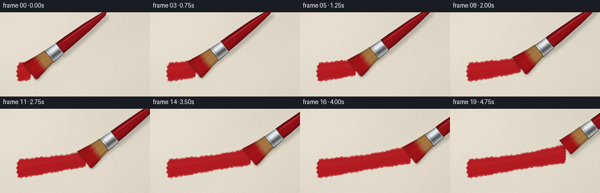
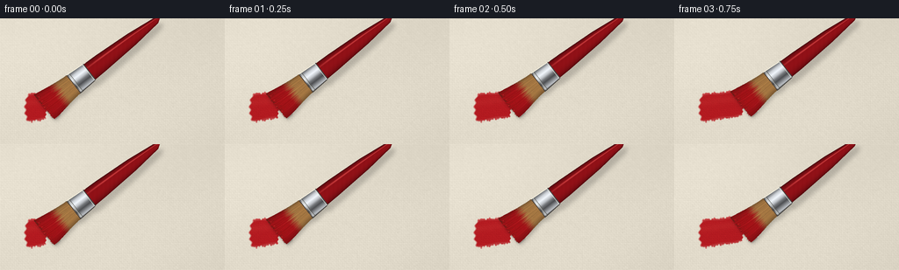

CODING AGENTS AS PIXEL WORLD MODELS
traex/GPT-6.1-Sol · mechanics_0046
点击播放 · 原生 RGB 像素
逐轮保存的候选
回放视频、检查图与代码变化。
每份候选均可单独播放。实际图片检查记录在下方工具轨迹中。
候选 01播放与检查图
点击播放 · 原生 RGB 像素


展开代码变化
--- 上一保存版本
+++ 本次保存版本
@@ -0,0 +1,212 @@
+"""Procedural macro shot: a loaded flat brush flexes against woven canvas.
+No source imagery, model or renderer is used. Geometry is supersampled in PIL;
+cloth, pigment, reflections and contact shadows are computed with numpy.
+"""
+from pathlib import Path
+import json
+import numpy as np
+from PIL import Image, ImageDraw, ImageFilter
+import artifact_io
+
+ROOT=Path(__file__).resolve().parent
+SPEC=json.loads((ROOT/'task_spec.json').read_text())
+W,H=SPEC['width'],SPEC['height']
+S=4
+WW,HH=W*S,H*S
+rng=np.random.default_rng(46)
+Y,X=np.mgrid[0:HH,0:WW].astype(np.float32)/S
+
+# Slightly irregular plain weave, with the crossing threads alternating on top.
+pitch=1.85
+warp=X+.11*np.sin(Y*.42)+.06*np.sin(Y*1.54)
+weft=Y+.13*np.sin(X*.32)+.06*np.cos(X*1.93)
+ux=warp/pitch; uy=weft/pitch
+fx=ux-np.floor(ux); fy=uy-np.floor(uy)
+ix=np.floor(ux).astype(int); iy=np.floor(uy).astype(int)
+check=((ix+iy)%2).astype(np.float32)
+ridge_x=np.exp(-((fx-.46)/.30)**2)
+ridge_y=np.exp(-((fy-.45)/.30)**2)
+# Fibrous yarn ridges have a sunlit upper-left flank and dark lower-right flank.
+sx=5.7*np.exp(-((fx-.28)/.15)**2)-7.9*np.exp(-((fx-.82)/.13)**2)
+sy=5.5*np.exp(-((fy-.27)/.15)**2)-8.0*np.exp(-((fy-.82)/.13)**2)
+thread_random=rng.normal(0,1.4,(int(H/pitch)+5,int(W/pitch)+5))
+yarn=thread_random[np.clip(iy,0,thread_random.shape[0]-1),np.clip(ix,0,thread_random.shape[1]-1)]
+weave=(sx*(.43+.57*check)+sy*(1-.57*check)+3*ridge_x*ridge_y+yarn)
+fiber=rng.normal(0,.95,(HH,WW))+.55*np.sin(X*31+Y*.43)+.48*np.sin(Y*34+X*.61)
+illum=6*np.exp(-((X-72)**2/20000+(Y-50)**2/7500))-6*(X/W)+1.8*np.sin(X*.021+Y*.036)
+canvas=np.stack([225+weave+fiber+illum,218+weave+fiber+illum,202+weave+fiber+illum],axis=-1)
+canvas=np.clip(canvas,0,255)
+# Modest optical falloff in the far side of the canvas, not a flat paper texture.
+blurred=np.asarray(Image.fromarray(canvas.astype(np.uint8)).filter(ImageFilter.GaussianBlur(.55*S)),dtype=np.float32)
+blur_weight=np.clip((58-Y)/70,0,.5)[...,None]
+canvas=canvas*(1-blur_weight)+blurred*blur_weight
+
+# The deposited stroke follows a single gently curved path across the fabric.
+def center(x):
+ return 101-.153*(x-43)+1.1*np.sin((x-43)/39)
+cy=center(X)
+d=Y-cy
+width=15.3+1.2*np.sin(X*.039)+.48*np.sin(X*.21)
+edgewav=.55*np.sin(X*.73)+.4*np.cos(X*1.91)+.3*yarn
+relief=np.clip(weave/13,-1,1)
+# Each bristle leaves a continuous very shallow channel; channels are not printed stripes.
+ridges=(.5+.5*np.cos(d*3.65+.28*np.sin(X*.065)))**7
+fine_grooves=(.5+.5*np.sin(d*7.7+.4*np.sin(X*.12)))**14
+sheen=np.exp(-((d+5.8)/4.2)**2)
+paint=np.empty_like(canvas)
+paint[...,0]=173+10*relief+13*ridges+5*sheen+2*np.sin(X*.036)
+paint[...,1]=20+3*relief+8*ridges+7*sheen
+paint[...,2]=27+3*relief+6*ridges+5*sheen
+paint += fiber[...,None]*.30
+# Tiny light-facing crests remain visible under opaque pigment.
+paint += np.maximum(weave-5,0)[...,None]*np.array([.60,.30,.23])
+paint=np.clip(paint,0,255)
+
+AX=np.array([.790,-.613],dtype=float); AX/=np.linalg.norm(AX)
+VX=np.array([-AX[1],AX[0]])
+strand_seed=rng.random((91,5))
+
+def poly(draw,pts,fill):
+ draw.polygon([(round(x*S),round(y*S)) for x,y in pts],fill=fill)
+
+def line(draw,pts,fill,width=1):
+ draw.line([(round(x*S),round(y*S)) for x,y in pts],fill=fill,width=max(1,round(width*S)),joint='curve')
+
+def brush_geometry(tip,pressure,lift):
+ def q(u,v):
+ return np.array(tip)+AX*u+VX*v
+ # Cross section of a long lacquered wooden handle.
+ handle=[q(60,-11),q(78,-10.5),q(124,-7.6),q(159,-3.7),q(165,0),q(159,3.7),q(124,7.6),q(78,10.5),q(60,11)]
+ ferrule=[q(38.8,-13.1),q(63,-11.5),q(63,11.5),q(38.8,13.1)]
+ strands=[]
+ for j in range(91):
+ a=j/90*2-1; z=strand_seed[j]
+ root=q(39.2+z[0]*.6,a*12.7)
+ spread=14.9+pressure*4.1
+ end=q(-.8+z[1]*2.4,a*spread)
+ end[0]-=pressure*(2.7+1.1*(1-a*a))
+ end[1]+=pressure*(1.5+.2*np.sin(j))
+ # The bristle is almost straight at its socket; the wet end bends to lie
+ # on the canvas, with the final tangent visibly trailing leftward.
+ p1=q(27,a*13.1)
+ p2=q(3.9+pressure*1.5,a*(spread-.6))
+ p2[0]+=pressure*3.5
+ p2[1]-=pressure*1.0
+ tt=np.linspace(0,1,37)[:,None]
+ curve=(1-tt)**3*root+3*(1-tt)**2*tt*p1+3*(1-tt)*tt**2*p2+tt**3*end
+ strands.append(curve)
+ silhouette=[strands[0][0],*strands[0][1:],*reversed(strands[-1]),strands[-1][0]]
+ return q,handle,ferrule,strands,silhouette
+
+frames=[]
+for i in range(SPEC['frames']):
+ # Smooth continuous drag followed by a small lift: contact releases and
+ # the splayed tips recover their narrower uncompressed form.
+ progress=min(i/17,1)
+ contact_x=52+145*progress
+ contact_y=float(center(contact_x))
+ lift=[0,0,0,0,0,0,0,0,0,0,0,0,0,0,0,0,0,0,5.0,11.0][i]
+ pressure=(.72+.19*np.sin(progress*np.pi))*(1-lift/14)
+ tip=(contact_x,contact_y-lift)
+ # Rounded irregular entry, frayed shoulders, and a slightly curved front.
+ side=width+edgewav-np.abs(d)
+ start=X-(27.5+3.4*(d/16)**2+1.0*np.sin(d*.81))
+ front=contact_x+1.1-1.6*(d/18)**2+.55*np.sin(d*1.4)-X
+ coverage=np.clip(side/1.5,0,1)*np.clip(start/2.0,0,1)*np.clip(front/.9,0,1)
+ # Dry brush in the shoulder catches yarn peaks and skips the little wells.
+ fringe=np.clip((np.abs(d)-(width-3.8))/3.8,0,1)
+ grain_skip=np.clip(.68+relief*.55+.25*np.sin(d*5.5+X*.10),0,1)
+ coverage*=1-fringe*(1-grain_skip)*.93
+ coverage*=1-.13*fine_grooves*(.4+.6*fringe)
+ coverage=np.clip(coverage*.985,0,1)
+ base=canvas*(1-coverage[...,None])+paint*coverage[...,None]
+ # Highlight beads and the thin raised longitudinal edges of the wet swath.
+ edge_light=np.exp(-((d+width-1.0)/.53)**2)*coverage
+ base+=edge_light[...,None]*np.array([22,10,8])
+ q,handle,ferrule,strands,silhouette=brush_geometry(tip,pressure,lift)
+ # Soft cast shadow, with a much tighter dark contact shadow at the hairs.
+ shadow=Image.new('L',(WW,HH),0); ds=ImageDraw.Draw(shadow)
+ def off(pts,dx,dy): return [(p[0]+dx,p[1]+dy) for p in pts]
+ poly(ds,off(handle,4+lift*.18,7+lift*.22),80)
+ poly(ds,off(ferrule,3,4+lift*.2),90)
+ poly(ds,off(silhouette,1.8,2.6+lift*.3),100)
+ sha=np.asarray(shadow.filter(ImageFilter.GaussianBlur((2.3+lift*.12)*S)),dtype=np.float32)/255
+ base*=1-sha[...,None]*.58
+ shadow2=Image.new('L',(WW,HH),0); sd2=ImageDraw.Draw(shadow2)
+ if lift<1:
+ for curve in strands:
+ line(sd2,off(curve[-10:],.7,1.2),75,.7)
+ sh2=np.asarray(shadow2.filter(ImageFilter.GaussianBlur(.5*S)),dtype=np.float32)/255
+ base*=1-sh2[...,None]*.65
+ image=Image.fromarray(np.clip(base,0,255).astype(np.uint8))
+ # Shading in brush-local coordinates makes the metal and handle rounded,
+ # rather than using flat vector fills.
+ U=(X-tip[0])*AX[0]+(Y-tip[1])*AX[1]
+ V=(X-tip[0])*VX[0]+(Y-tip[1])*VX[1]
+ hm=Image.new('L',(WW,HH),0); poly(ImageDraw.Draw(hm),handle,255)
+ hw=np.interp(U,[60,78,124,159,165],[11,10.5,7.6,3.7,.1])
+ vv=V/np.maximum(hw,.1)
+ cyl=np.sqrt(np.maximum(0,1-vv*vv))
+ glint=np.exp(-((vv+.48)/.085)**2)
+ longglint=(.4+.6*np.clip((U-63)/22,0,1))
+ hcol=np.stack([68+77*cyl+66*glint*longglint,
+ 5+12*cyl+44*glint*longglint,
+ 10+13*cyl+39*glint*longglint],axis=-1)
+ hcol+=np.sin(U*1.0+V*.8)[...,None]*.8
+ def layer(im,mask,color):
+ al=np.asarray(mask,dtype=np.float32)[...,None]/255
+ cur=np.asarray(im,dtype=np.float32)
+ return Image.fromarray(np.clip(cur*(1-al)+color*al,0,255).astype(np.uint8))
+ image=layer(image,hm,hcol)
+ draw=ImageDraw.Draw(image)
+ # A lacquer edge and hairline reflection along the left shoulder.
+ line(draw,[q(66,-10.6),q(80,-10.1),q(124,-7.5),q(157,-3.6)],(73,14,19),.65)
+ fm=Image.new('L',(WW,HH),0); poly(ImageDraw.Draw(fm),ferrule,255)
+ local=V/13
+ reflect=np.interp(local,[-1,-.9,-.63,-.35,-.08,.13,.36,.61,.83,1],
+ [62,110,205,245,192,117,77,138,189,72])
+ brushed=.9*np.sin(U*20+V*.16)+.75*np.sin(V*18)+.5*np.sin(U*41)
+ refl=reflect+brushed+2.3*np.sin(U*.15)
+ fcol=np.stack([refl*.98,refl,refl*1.015+2],axis=-1)
+ image=layer(image,fm,fcol)
+ draw=ImageDraw.Draw(image)
+ line(draw,[q(63,-11.5),q(63,11.5)],(66,64,62),.65)
+ line(draw,[q(61.8,-11.6),q(61.8,11.6)],(226,226,215),.5)
+ line(draw,[q(40.1,-13.0),q(40.1,13.0)],(77,66,56),1.0)
+ line(draw,[q(42.4,-12.9),q(42.4,12.9)],(201,203,196),.55)
+ line(draw,[q(43.8,-12.8),q(43.8,12.8)],(99,99,94),.4)
+ line(draw,[q(40,-13.0),q(62,-11.6)],(245,240,222),.65)
+ line(draw,[q(40,13.0),q(62,11.6)],(62,59,55),.7)
+ # Wet filaments: the red colour climbs unevenly into the natural ochre hairs.
+ poly(draw,silhouette,(87,32,21))
+ for j,curve in enumerate(strands):
+ seed=strand_seed[j]
+ aa=j/90*2-1
+ lateral=.7+.3*np.sqrt(max(0,1-aa*aa))
+ variation=(seed[2]-.5)*30
+ gold=np.array([166+variation,120+variation*.72,67+variation*.37])*lateral
+ red=np.array([163+variation*.7,18+variation*.13,23+variation*.2])*lateral
+ for k in range(len(curve)-1):
+ t=k/(len(curve)-2)
+ # Golden roots visible for about the first quarter of each bristle.
+ redmix=np.clip((t-(.26+seed[3]*.13))/.21,0,1)
+ col=gold*(1-redmix)+red*redmix
+ # Light glistens along selected rounded, paint-loaded filaments.
+ gloss=(max(0,np.sin(j*2.399))**11)*(4+15*redmix)*np.sin(t*np.pi)**2
+ col+=np.array([1,.66,.55])*gloss
+ line(draw,curve[k:k+2],tuple(np.clip(col,0,255).astype(int)),.48+seed[4]*.19)
+ # A few fine split hairs at the shoulders demonstrate splay and release.
+ for j in [0,1,4,86,89,90]:
+ c=strands[j]
+ col=(133+int(strand_seed[j,2]*35),23,27)
+ line(draw,c[-8:],col,.29)
+ # Tiny pools of red pigment reflect the light only right at contact.
+ if lift==0:
+ for j in [13,29,47,67]:
+ pt=strands[j][-2]
+ line(draw,[pt,pt+np.array([1.2,-.12])],(212,58,51),.38)
+ image=image.resize((W,H),Image.Resampling.LANCZOS)
+ frames.append(np.asarray(image,dtype=np.uint8))
+
+artifact_io.save(np.stack(frames),ROOT)
+print(f'Saved {len(frames)} RGB frames, {W} x {H}, {SPEC["fps"]} fps to {ROOT}')
可观测工具轨迹
实际执行的命令与返回图片。
命令 1exit 0
/bin/bash -lc 'ls -la; cat prompt.txt; cat GENERATION_RULES.md; cat task_spec.json'
命令 2exit 0
/bin/bash -lc "cat artifact_io.py; python - <<'PY'
import PIL,numpy
print('PIL',PIL.__version__)
PY"命令 3exit 0
/bin/bash -lc "cat > generate.py <<'PY'
\"\"\"Procedural macro shot: a loaded flat brush flexes against woven canvas.
No source imagery, model or renderer is used. Geometry is supersampled in PIL;
cloth, pigment, reflections and contact shadows are computed with numpy.
\"\"\"
from pathlib import Path
import json
import numpy as np
from PIL import Image, ImageDraw, ImageFilter
import artifact_io
ROOT=Path(__file__).resolve().parent
SPEC=json.loads((ROOT/'task_spec.json').read_text())
W,H=SPEC['width'],SPEC['height']
S=4
WW,HH=W*S,H*S
rng=np.random.default_rng(46)
Y,X=np.mgrid[0:HH,0:WW].astype(np.float32)/S
# Slightly irregular plain weave, with the crossing threads alternating on top.
pitch=1.85
warp=X+.11*np.sin(Y*.42)+.06*np.sin(Y*1.54)
weft=Y+.13*np.sin(X*.32)+.06*np.cos(X*1.93)
ux=warp/pitch; uy=weft/pitch
fx=ux-np.floor(ux); fy=uy-np.floor(uy)
ix=np.floor(ux).astype(int); iy=np.floor(uy).astype(int)
check=((ix+iy)%2).astype(np.float32)
ridge_x=np.exp(-((fx-.46)/.30)**2)
ridge_y=np.exp(-((fy-.45)/.30)**2)
# Fibrous yarn ridges have a sunlit upper-left flank and dark lower-right flank.
sx=5.7*np.exp(-((fx-.28)/.15)**2)-7.9*np.exp(-((fx-.82)/.13)**2)
sy=5.5*np.exp(-((fy-.27)/.15)**2)-8.0*np.exp(-((fy-.82)/.13)**2)
thread_random=rng.normal(0,1.4,(int(H/pitch)+5,int(W/pitch)+5))
yarn=thread_random[np.clip(iy,0,thread_random.shape[0]-1),np.clip(ix,0,thread_random.shape[1]-1)]
weave=(sx*(.43+.57*check)+sy*(1-.57*check)+3*ridge_x*ridge_y+yarn)
fiber=rng.normal(0,.95,(HH,WW))+.55*np.sin(X*31+Y*.43)+.48*np.sin(Y*34+X*.61)
illum=6*np.exp(-((X-72)**2/20000+(Y-50)**2/7500))-6*(X/W)+1.8*np.sin(X*.021+Y*.036)
canvas=np.stack([225+weave+fiber+illum,218+weave+fiber+illum,202+weave+fiber+illum],axis=-1)
canvas=np.clip(canvas,0,255)
# Modest optical falloff in the far side of the canvas, not a flat paper texture.
blurred=np.asarray(Image.fromarray(canvas.astype(np.uint8)).filter(ImageFilter.GaussianBlur(.55*S)),dtype=np.float32)
blur_weight=np.clip((58-Y)/70,0,.5)[...,None]
canvas=canvas*(1-blur_weight)+blurred*blur_weight
# The deposited stroke follows a single gently curved path across the fabric.
def center(x):
return 101-.153*(x-43)+1.1*np.sin((x-43)/39)
cy=center(X)
d=Y-cy
width=15.3+1.2*np.sin(X*.039)+.48*np.sin(X*.21)
edgewav=.55*np.sin(X*.73)+.4*np.cos(X*1.91)+.3*yarn
relief=np.clip(weave/13,-1,1)
# Each bristle leaves a continuous very shallow channel; channels are not printed stripes.
ridges=(.5+.5*np.cos(d*3.65+.28*np.sin(X*.065)))**7
fine_grooves=(.5+.5*np.sin(d*7.7+.4*np.sin(X*.12)))**14
sheen=np.exp(-((d+5.8)/4.2)**2)
paint=np.empty_like(canvas)
paint[...,0]=173+10*relief+13*ridges+5*sheen+2*np.sin(X*.036)
paint[...,1]=20+3*relief+8*ridges+7*sheen
paint[...,2]=27+3*relief+6*ridges+5*sheen
paint += fiber[...,None]*.30
# Tiny light-facing crests remain visible under opaque pigment.
paint += np.maximum(weave-5,0)[...,None]*np.array([.60,.30,.23])
paint=np.clip(paint,0,255)
AX=np.array([.790,-.613],dtype=float); AX/=np.linalg.norm(AX)
VX=np.array([-AX[1],AX[0]])
strand_seed=rng.random((91,5))
def poly(draw,pts,fill):
draw.polygon([(round(x*S),round(y*S)) for x,y in pts],fill=fill)
def line(draw,pts,fill,width=1):
draw.line([(round(x*S),round(y*S)) for x,y in pts],fill=fill,width=max(1,round(width*S)),joint='curve')
def brush_geometry(tip,pressure,lift):
def q(u,v):
return np.array(tip)+AX*u+VX*v
# Cross section of a long lacquered wooden handle.
handle=[q(60,-11),q(78,-10.5),q(124,-7.6),q(159,-3.7),q(165,0),q(159,3.7),q(124,7.6),q(78,10.5),q(60,11)]
ferrule=[q(38.8,-13.1),q(63,-11.5),q(63,11.5),q(38.8,13.1)]
strands=[]
for j in range(91):
a=j/90*2-1; z=strand_seed[j]
root=q(39.2+z[0]*.6,a*12.7)
spread=14.9+pressure*4.1
end=q(-.8+z[1]*2.4,a*spread)
end[0]-=pressure*(2.7+1.1*(1-a*a))
end[1]+=pressure*(1.5+.2*np.sin(j))
# The bristle is almost straight at its socket; the wet end bends to lie
# on the canvas, with the final tangent visibly trailing leftward.
p1=q(27,a*13.1)
p2=q(3.9+pressure*1.5,a*(spread-.6))
p2[0]+=pressure*3.5
p2[1]-=pressure*1.0
tt=np.linspace(0,1,37)[:,None]
curve=(1-tt)**3*root+3*(1-tt)**2*tt*p1+3*(1-tt)*tt**2*p2+tt**3*end
strands.append(curve)
silhouette=[strands[0][0],*strands[0][1:],*reversed(strands[-1]),strands[-1][0]]
return q,handle,ferrule,strands,silhouette
frames=[]
for i in range(SPEC['frames']):
# Smooth continuous drag followed by a small lift: contact releases and
# the splayed tips recover their narrower uncompressed form.
progress=min(i/17,1)
contact_x=52+145*progress
contact_y=float(center(contact_x))
lift=[0,0,0,0,0,0,0,0,0,0,0,0,0,0,0,0,0,0,5.0,11.0][i]
pressure=(.72+.19*np.sin(progress*np.pi))*(1-lift/14)
tip=(contact_x,contact_y-lift)
# Rounded irregular entry, frayed shoulders, and a slightly curved front.
side=width+edgewav-np.abs(d)
start=X-(27.5+3.4*(d/16)**2+1.0*np.sin(d*.81))
front=contact_x+1.1-1.6*(d/18)**2+.55*np.sin(d*1.4)-X
coverage=np.clip(side/1.5,0,1)*np.clip(start/2.0,0,1)*np.clip(front/.9,0,1)
# Dry brush in the shoulder catches yarn peaks and skips the little wells.
fringe=np.clip((np.abs(d)-(width-3.8))/3.8,0,1)
grain_skip=np.clip(.68+relief*.55+.25*np.sin(d*5.5+X*.10),0,1)
coverage*=1-fringe*(1-grain_skip)*.93
coverage*=1-.13*fine_grooves*(.4+.6*fringe)
coverage=np.clip(coverage*.985,0,1)
base=canvas*(1-coverage[...,None])+paint*coverage[...,None]
# Highlight beads and the thin raised longitudinal edges of the wet swath.
edge_light=np.exp(-((d+width-1.0)/.53)**2)*coverage
base+=edge_light[...,None]*np.array([22,10,8])
q,handle,ferrule,strands,silhouette=brush_geometry(tip,pressure,lift)
# Soft cast shadow, with a much tighter dark contact shadow at the hairs.
shadow=Image.new('L',(WW,HH),0); ds=ImageDraw.Draw(shadow)
def off(pts,dx,dy): return [(p[0]+dx,p[1]+dy) for p in pts]
poly(ds,off(handle,4+lift*.18,7+lift*.22),80)
poly(ds,off(ferrule,3,4+lift*.2),90)
poly(ds,off(silhouette,1.8,2.6+lift*.3),100)
sha=np.asarray(shadow.filter(ImageFilter.GaussianBlur((2.3+lift*.12)*S)),dtype=np.float32)/255
base*=1-sha[...,None]*.58
shadow2=Image.new('L',(WW,HH),0); sd2=ImageDraw.Draw(shadow2)
if lift<1:
for curve in strands:
line(sd2,off(curve[-10:],.7,1.2),75,.7)
sh2=np.asarray(shadow2.filter(ImageFilter.GaussianBlur(.5*S)),dtype=np.float32)/255
base*=1-sh2[...,None]*.65
image=Image.fromarray(np.clip(base,0,255).astype(np.uint8))
# Shading in brush-local coordinates makes the metal and handle rounded,
# rather than using flat vector fills.
U=(X-tip[0])*AX[0]+(Y-tip[1])*AX[1]
V=(X-tip[0])*VX[0]+(Y-tip[1])*VX[1]
hm=Image.new('L',(WW,HH),0); poly(ImageDraw.Draw(hm),handle,255)
hw=np.interp(U,[60,78,124,159,165],[11,10.5,7.6,3.7,.1])
vv=V/np.maximum(hw,.1)
cyl=np.sqrt(np.maximum(0,1-vv*vv))
glint=np.exp(-((vv+.48)/.085)**2)
longglint=(.4+.6*np.clip((U-63)/22,0,1))
hcol=np.stack([68+77*cyl+66*glint*longglint,
5+12*cyl+44*glint*longglint,
10+13*cyl+39*glint*longglint],axis=-1)
hcol+=np.sin(U*1.0+V*.8)[...,None]*.8
def layer(im,mask,color):
al=np.asarray(mask,dtype=np.float32)[...,None]/255
cur=np.asarray(im,dtype=np.float32)
return Image.fromarray(np.clip(cur*(1-al)+color*al,0,255).astype(np.uint8))
image=layer(image,hm,hcol)
draw=ImageDraw.Draw(image)
# A lacquer edge and hairline reflection along the left shoulder.
line(draw,[q(66,-10.6),q(80,-10.1),q(124,-7.5),q(157,-3.6)],(73,14,19),.65)
fm=Image.new('L',(WW,HH),0); poly(ImageDraw.Draw(fm),ferrule,255)
local=V/13
reflect=np.interp(local,[-1,-.9,-.63,-.35,-.08,.13,.36,.61,.83,1],
[62,110,205,245,192,117,77,138,189,72])
brushed=.9*np.sin(U*20+V*.16)+.75*np.sin(V*18)+.5*np.sin(U*41)
refl=reflect+brushed+2.3*np.sin(U*.15)
fcol=np.stack([refl*.98,refl,refl*1.015+2],axis=-1)
image=layer(image,fm,fcol)
draw=ImageDraw.Draw(image)
line(draw,[q(63,-11.5),q(63,11.5)],(66,64,62),.65)
line(draw,[q(61.8,-11.6),q(61.8,11.6)],(226,226,215),.5)
line(draw,[q(40.1,-13.0),q(40.1,13.0)],(77,66,56),1.0)
line(draw,[q(42.4,-12.9),q(42.4,12.9)],(201,203,196),.55)
line(draw,[q(43.8,-12.8),q(43.8,12.8)],(99,99,94),.4)
line(draw,[q(40,-13.0),q(62,-11.6)],(245,240,222),.65)
line(draw,[q(40,13.0),q(62,11.6)],(62,59,55),.7)
# Wet filaments: the red colour climbs unevenly into the natural ochre hairs.
poly(draw,silhouette,(87,32,21))
for j,curve in enumerate(strands):
seed=strand_seed[j]
aa=j/90*2-1
lateral=.7+.3*np.sqrt(max(0,1-aa*aa))
variation=(seed[2]-.5)*30
gold=np.array([166+variation,120+variation*.72,67+variation*.37])*lateral
red=np.array([163+variation*.7,18+variation*.13,23+variation*.2])*lateral
for k in range(len(curve)-1):
t=k/(len(curve)-2)
# Golden roots visible for about the first quarter of each bristle.
redmix=np.clip((t-(.26+seed[3]*.13))/.21,0,1)
col=gold*(1-redmix)+red*redmix
# Light glistens along selected rounded, paint-loaded filaments.
gloss=(max(0,np.sin(j*2.399))**11)*(4+15*redmix)*np.sin(t*np.pi)**2
col+=np.array([1,.66,.55])*gloss
line(draw,curve[k:k+2],tuple(np.clip(col,0,255).astype(int)),.48+seed[4]*.19)
# A few fine split hairs at the shoulders demonstrate splay and release.
for j in [0,1,4,86,89,90]:
c=strands[j]
col=(133+int(strand_seed[j,2]*35),23,27)
line(draw,c[-8:],col,.29)
# Tiny pools of red pigment reflect the light only right at contact.
if lift==0:
for j in [13,29,47,67]:
pt=strands[j][-2]
line(draw,[pt,pt+np.array([1.2,-.12])],(212,58,51),.38)
image=image.resize((W,H),Image.Resampling.LANCZOS)
frames.append(np.asarray(image,dtype=np.uint8))
artifact_io.save(np.stack(frames),ROOT)
print(f'Saved {len(frames)} RGB frames, {W} x {H}, {SPEC[\"fps\"]} fps to {ROOT}')
PY
python generate.py
ls -lh pixels.npz index.html inspection.png frames/00.png frames/19.png"命令 4exit 0
/bin/bash -lc "python - <<'PY'
from pathlib import Path
import numpy as np
from PIL import Image
p=Path('.')
z=np.load('pixels.npz')['pixels']
assert z.shape==(144,256,20)
assert len(list((p/'frames').glob('*.png')))==20
for f in (p/'frames').glob('*.png'):
im=Image.open(f); assert im.mode=='RGB' and im.size==(256,144)
print('Verified all 20 RGB frames and packed video artifact.')
PY
if command -v ffmpeg >/dev/null; then ffmpeg -v error -y -framerate 4 -i frames/%02d.png -c:v libx264 -crf 18 -pix_fmt yuv420p -movflags +faststart video.mp4; ls -lh video.mp4; fi"保存候选 1 份；完成命令 4 次；可验证图片返回 0 张。原始 API 响应与完整日志保留在本地。